Ovo su sve dosad napravljene vježbe za kolegij
Font
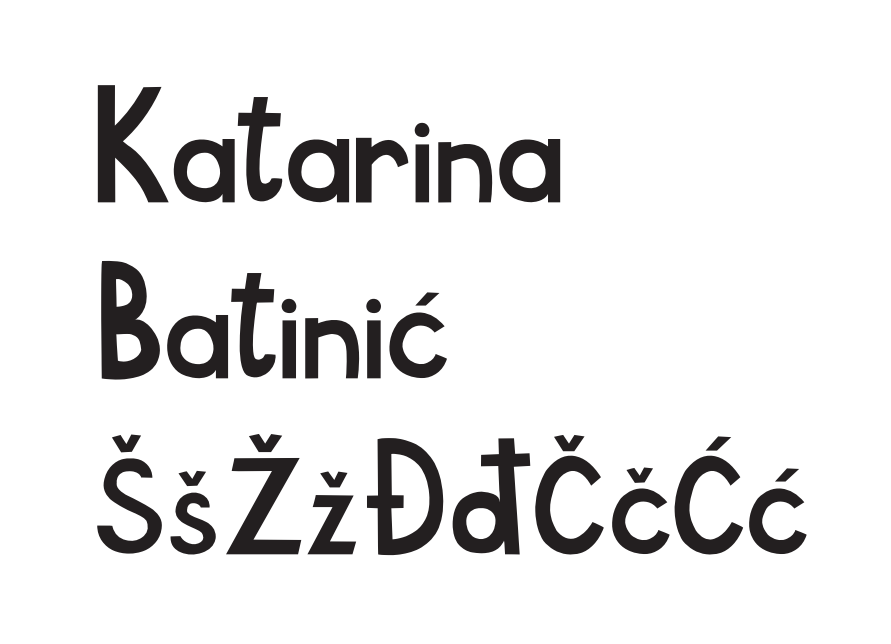Crtanje Bezierovih krivulja u koordinatnom sustavu i opcija blend
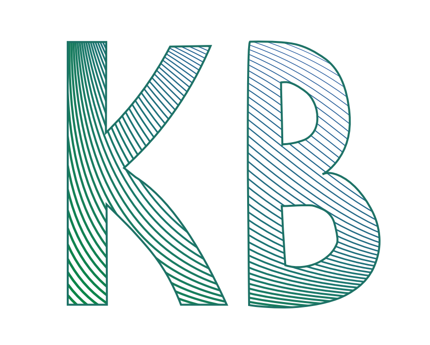Sustav boja, transformacije, multipliciranje, grupiranje
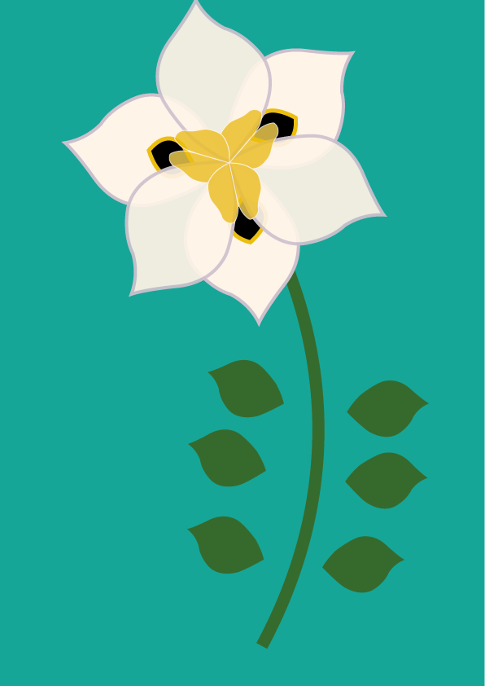 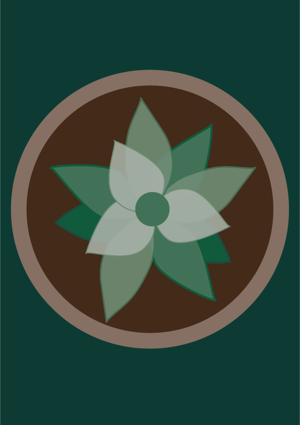Složeni objekti i gradijenti
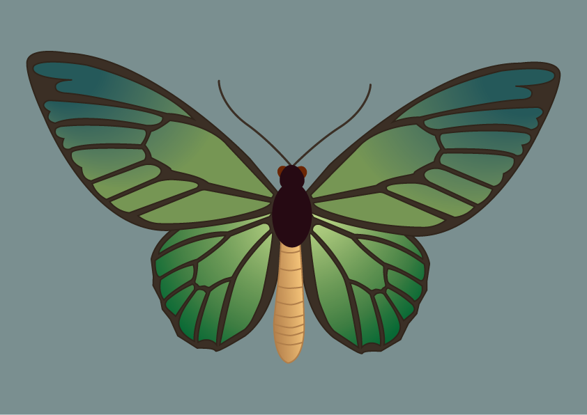Retuširanje


 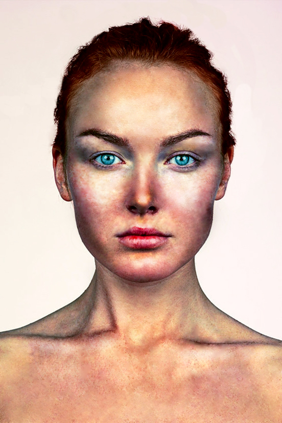
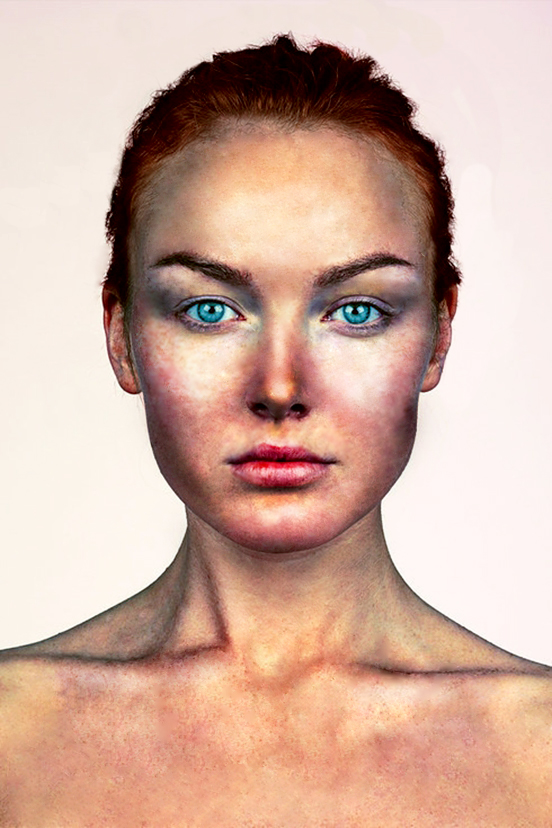
Koloriranje
 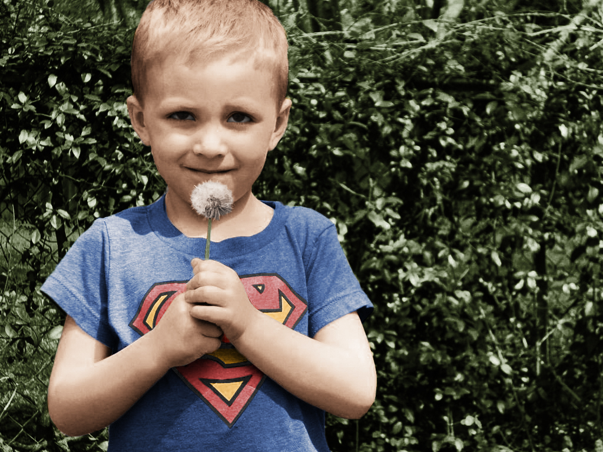
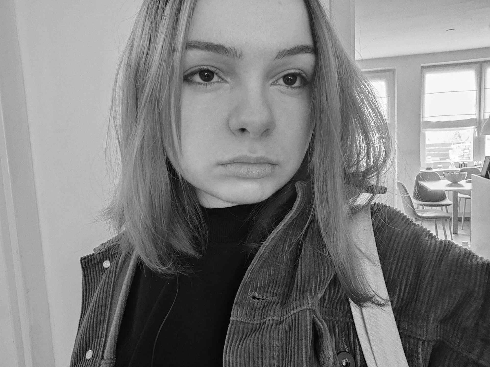
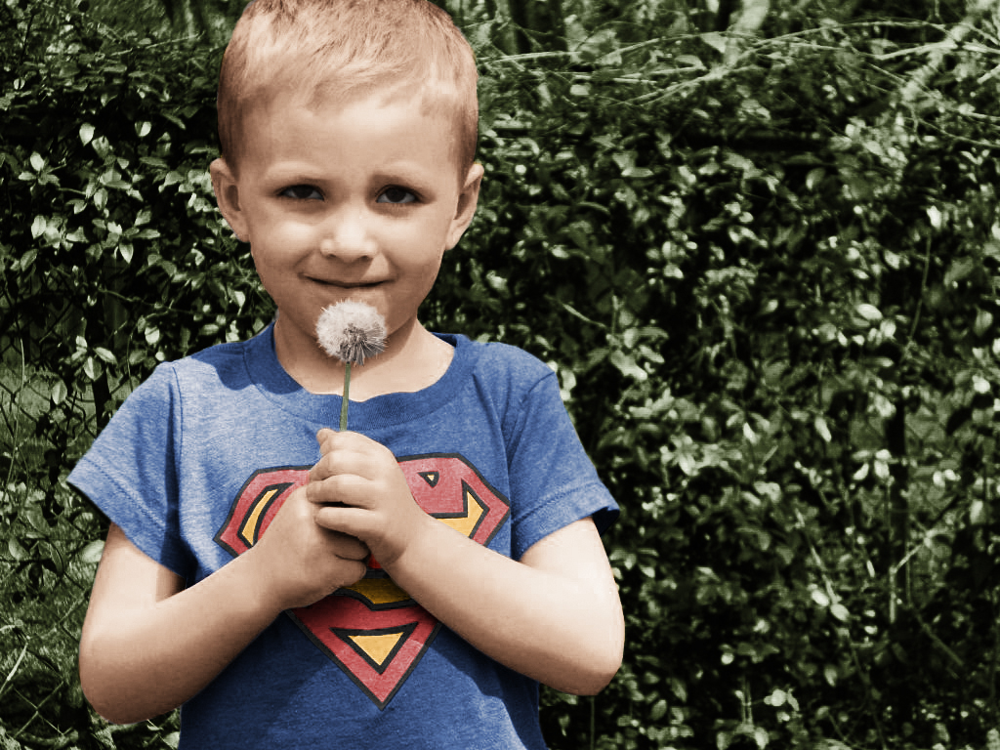
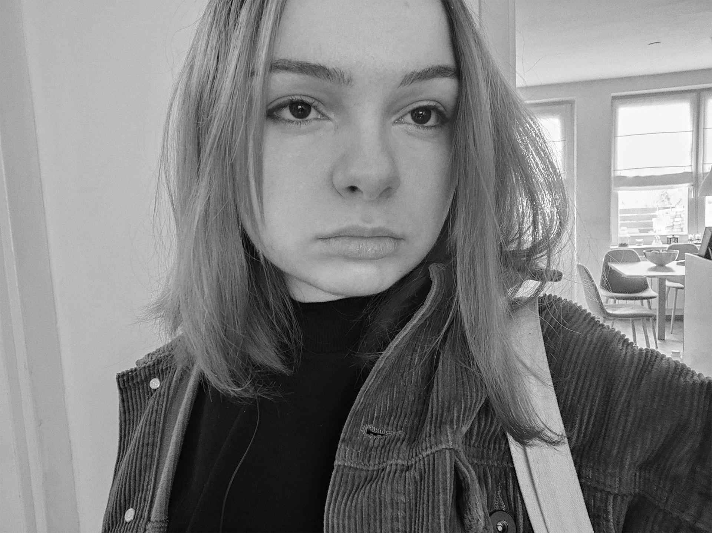


Fotomontaža
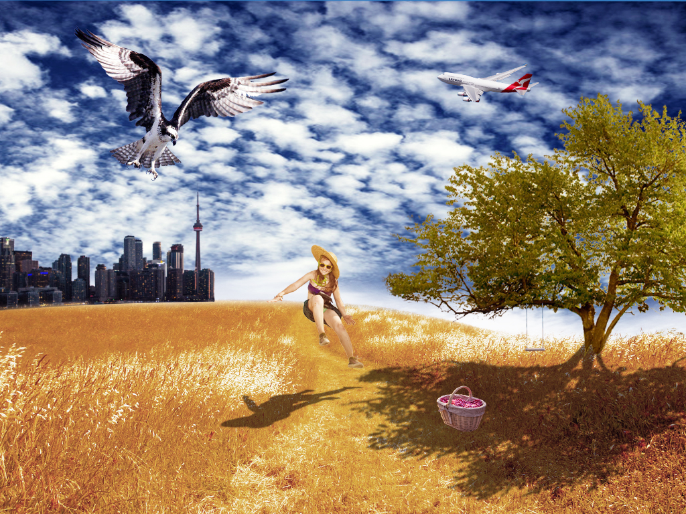Kinemagraf

Obrada videa